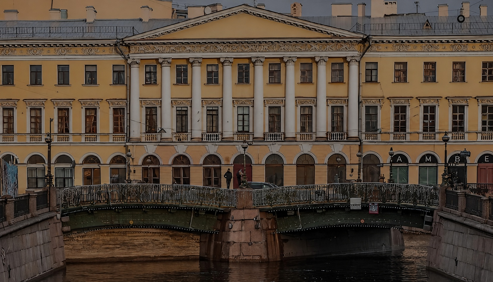
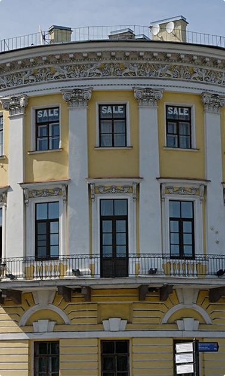
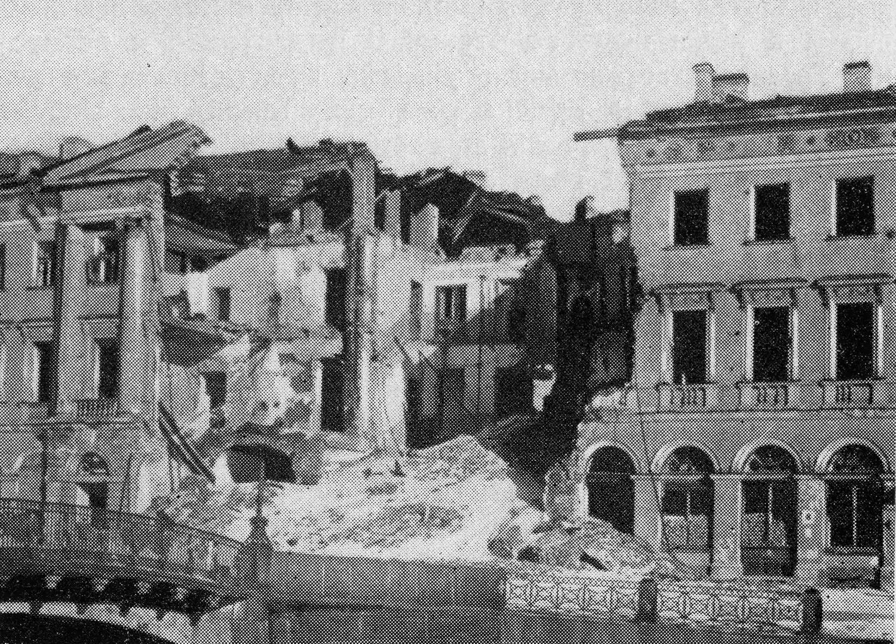

Санкт-Петербург · Марсово поле
Дом Адамини
Поздний классицизм, разрушение и возрождение одного здания
История дома Адамини

Здание построили в 1823–1827 годах по проекту архитектора Доменико Адамини.
Дом возвели для купца Антонова — отсюда и второе название. Это яркий образец позднего классицизма: трёхэтажное здание с выразительным угловым объёмом и рустовкой в нижнем ярусе, характерной для петербургской застройки той эпохи.
Дом сразу стал заметной городской доминантой на перекрёстке у Марсова поля. В XIX веке здесь жили и бывали представители творческой интеллигенции, а помещения активно сдавали под магазины и конторы — типичный «доходный» характер здания.
Заметная городская доминанта на перекрёстке у Марсова поля
В начале XX века дом оставался крупным доходным зданием. Во время Первой мировой войны и в революционный период его статус не менялся кардинально: он продолжал использоваться как жилой и коммерческий объект, хотя экономическая ситуация и управление городской недвижимостью сильно менялись.
Во время Великой Отечественной войны дом Адамини серьёзно пострадал. В 1941 году в здание попала авиабомба, из-за чего часть конструкций была разрушена. В условиях блокады любые восстановительные работы были крайне ограничены, но сохранение и восстановление значимых городских зданий считалось важной задачей для города.
Двести лет на одном углу
-
1823–1827
Строительство
По проекту Доменико Адамини возводят трёхэтажное здание в стиле позднего классицизма для купца Антонова.
-
XIX век
Доходный дом
Здесь живут и бывают представители творческой интеллигенции, а помещения сдают под магазины и конторы.
-
Начало XX века
Перемены вокруг
Дом остаётся крупным доходным зданием: жилым и коммерческим объектом даже в годы войны и революции.
-
1941
Авиабомба
Попадание бомбы разрушает часть конструкций. В блокаду восстановительные работы крайне ограничены.
-
Сегодня
Возрождение
Здание восстановлено и снова стоит на углу у Марсова поля.
Разрушение и восстановление

Военные годы Сегодня